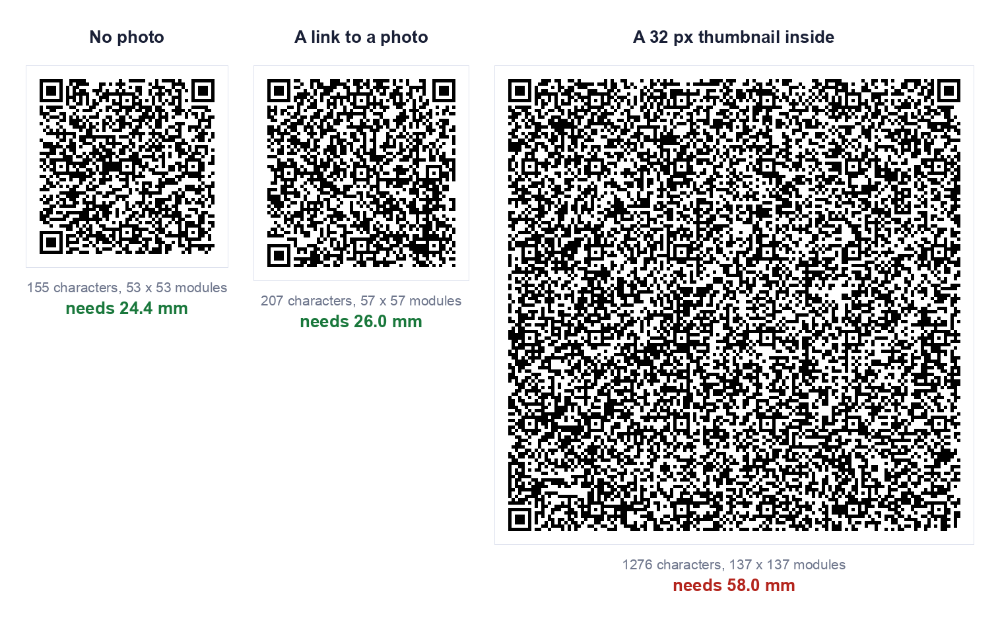

Scan a contact QR code and the phone offers to save a name, a number and an email. People naturally want a face next to the name as well. So can a VCard QR code carry a photo?
The honest answer has three parts. A real photo does not fit in a QR code. A tiny thumbnail does fit, but it makes the code far larger than a business card can hold. And there is a third way, a link to a photo, which adds very little size. We measured all three, and the results are below.
What Is a VCard QR Code With Photo?
A VCard QR code holds a contact card as plain text. That text is in the vCard format, the same one behind the .vcf files your phone exports when you share a contact. When a phone reads the code and sees BEGIN:VCARD at the start, it offers to add a contact.
The vCard format has a PHOTO field, so a card "with photo" simply means the text contains that field. There are two ways to fill it:
- Embedded. The picture itself, converted to text and written into the card. Everything travels inside the code.
- By address. A single line giving the web address of a picture you host. The code carries only the address, and the picture lives elsewhere.
We looked at the embedded route in detail in can you put a photo in a vCard QR code. This guide covers all the routes and how to actually make each one.
How to Create a VCard QR Code With Photo
Our vCard QR code generator deliberately has no photo field, for the size reasons below. You can still build a code with a photo, because a vCard code is just text, and our text QR code generator encodes exactly what you paste. We tested that on the live page with a multi-line vCard containing a photo line, and the code read back identical to what we pasted.
Step 1: Choose how the photo is attached
This is the decision that sets the size. The table in the next section shows what each route costs.
Step 2: Write the contact text
For the link route, a complete card looks like this:
BEGIN:VCARD
VERSION:3.0
FN:Sarah Mitchell
N:Mitchell;Sarah;;;
ORG:Northgate Design
TEL;TYPE=CELL:+14155550142
EMAIL:sarah@northgate.design
PHOTO;VALUE=uri:https://northgate.design/sarah.jpg
END:VCARD
The PHOTO;VALUE=uri: line followed by the picture's address is the part that adds the photo. The format allows it. Whether a particular phone then goes and downloads that picture when it saves the contact is something we have not tested, so check on the devices that matter to you.
Step 3: Generate the code
Paste the finished text into the text generator and download the code. Use PNG for screens and SVG if anything is going to a printer.
Step 4: Scan it back and test on a phone
Read the code with a plain QR scanner first and check the text for typos. Then scan it with a phone, save the contact, and open the saved entry to see whether the name, number and photo all landed. Do this before anything is printed.

| What the code holds | Characters | Grid | Smallest usable print |
|---|---|---|---|
| Name, phone, email, company | 155 | 53 x 53 | 24.4 mm |
| The same, plus a link to a photo | 207 | 57 x 57 | 26.0 mm |
| The same, plus a 32 pixel thumbnail embedded | 1,276 | 137 x 137 | 58.0 mm |
| A link to a contact page only | 30 | 29 x 29 | 14.8 mm |
All four decoded correctly. Print size is the smallest usable width, from a 0.4 mm per module floor plus the four module quiet zone. These are our numbers for this particular contact and this particular thumbnail. In our earlier test a 32 pixel thumbnail came to 53 mm rather than 58, because the contact text and the picture were different. The exact figure moves with both, but the conclusion does not: an embedded photo costs several times the area of everything else on the card.
The embedded route also gets worse when you ask for more error correction. The same thumbnail came out at 50 mm at level L, 58 mm at M, 66 mm at Q and 74 mm at H, which is the largest QR code that exists.
What Information Can You Add?
A VCard can hold much more than a name and number. The practical question is what each field is worth against the printed space it uses.
| Field | Worth including? |
|---|---|
| Name | Always. Without it the saved contact is a nameless number |
| Mobile number | Usually. Write it in full international form, starting with a plus |
| Usually. Cheap in space and almost always wanted | |
| Company | If it helps people remember who you are later |
| Website | Only if it is short |
| Job title and postal address | Rarely. Each adds density |
| Photo, by link | Optional. Adds about 1.6 mm in our test, but depends on the phone fetching it |
| Photo, embedded | Not for anything printed small |
If you want the printed cost of every field measured against the space on a business card, that is in QR code for a business card.
One hard limit to know about. A QR code stops at 177 by 177 modules, and that holds at most 2,331 bytes at the common level M, or 1,273 at the highest level H. A photo of any ordinary size is far beyond that, which is why only a tiny thumbnail can ever be embedded.
Why Use a VCard QR Code?
- Nothing to type. The details go straight into the phone, so no number is misheard and no email is misspelt.
- It works without a signal. The contact is inside the code, so no internet connection is needed to read it.
- It cannot expire. A static code is a printed pattern with nothing behind it and no account to renew.
- It is free to make. Our generators are free, with no signup.
Two things to weigh against that. The details are stored as plain text, so anyone who scans the code, or photographs it, can read them. And because the code is static, it cannot be edited: a new number means a new code. If your details change often, point the code at a contact page you control instead. We explain the tradeoff in static vs dynamic QR codes.
VCard QR Code for Business Cards
This is where the photo question matters most, because space is the whole problem. A common business card is 85 by 55 mm, and once the logo and contact lines are on it there is little room left.
Set that against the table above. An embedded thumbnail needed 58 mm in our test, which is taller than the 55 mm card itself. The no photo code needed 24.4 mm and the photo link needed 26.0 mm, both close to half the height of the card. Only the contact page link, at 14.8 mm, leaves comfortable room.
So for a printed card, there are three sensible choices:
- A link to a contact page. Smallest code, and the page can show your photo at any size. You lose the one scan that saves the contact directly.
- A plain vCard code with your photo printed beside it. The photo is on the card for people to see. It simply is not part of the code, which is why this layout works.
- The photo link route, if you have tested it on the phones your contacts use and are happy with the result.
Whatever you choose, print at 25 mm or larger if you can, and scan a printed proof before ordering the run.
How to Scan a VCard QR Code
On most current phones the built-in camera app recognises QR codes. Open the camera, point it at the code and hold steady. A prompt appears, and for a vCard it offers to add a contact. Tap it, review the details, and save.
If your camera does not react to the code, use a QR scanner app instead. If the code is on a screen rather than on paper, you cannot point your camera at your own phone, so our guide to scanning a QR code from a screenshot covers that case.
To see exactly what is inside a code without saving anything, open it in our QR scanner. It shows the raw vCard text, which is the quickest way to check a card for mistakes.
If a printed code will not scan, the usual causes are size, blur and contrast, and we measured each of them in why won't this QR code scan.
Frequently Asked Questions
Can a VCard QR code hold a photo?
A very small thumbnail can be embedded, but it makes the code several times larger. In our test a 32 pixel thumbnail took the code from 24.4 mm to 58.0 mm. A photo of ordinary size does not fit in a QR code at all.
Will the photo show up when someone saves my contact?
That depends on the phone and on how the photo was attached. We did not test this across devices, so we cannot promise it. Scan your own finished code on the phones that matter to you and open the saved contact.
What is the easiest way to get my photo in front of people?
Print it beside the code on the card, or link to a contact page that shows it. Both give people your face without asking the code to carry it.
Can I put a picture in the middle of the QR code instead?
That is a logo, not contact data. It covers some of the code's modules and uses up error correction, so it needs a higher level and a check that the code still reads. Our custom QR code generator decodes the styled code after each change and tells you whether it still scans.
Does a VCard QR code expire?
A static one does not. It is a printed pattern holding the contact text, with nothing behind it that can lapse.
Can I change the details after printing?
No. A static code cannot be edited. If your details may change, link to a page you control and update the page instead.
Is it free to make a VCard QR code?
Yes. Our vCard generator and text generator are free, need no signup, and build the code in your browser, so nothing you type is uploaded.